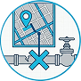
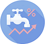

47th Philippine Association of Water Districts Convention Day 2
More News →Quick Links
-

Water Interruptions
View updates on scheduled and emergency water service interruptions.
Learn more -
Rates
View water rates.
Learn more -
Philippine Transparency Seal
Enhance Transparency. Enforce Accountability.
Learn more -
eFOI
Access Freedom of Information Philippines.
Learn more -

Charges
View laboratory charges.
Learn more -
Citizen's Charter
View BCWD's Citizen's Charter Handbook of 2025 (2nd Edition).
Learn more -
Bids and Awards
BCWD procurement activities published in compliance with RA 9184.
Learn more -
Frequently Asked Questions
Common questions and answers regarding water connection and services.
Learn more
The official publication of Butuan City Water District


This publication highlights the commitment of the BCWD to transparent and high-quality service.
View all Publications →